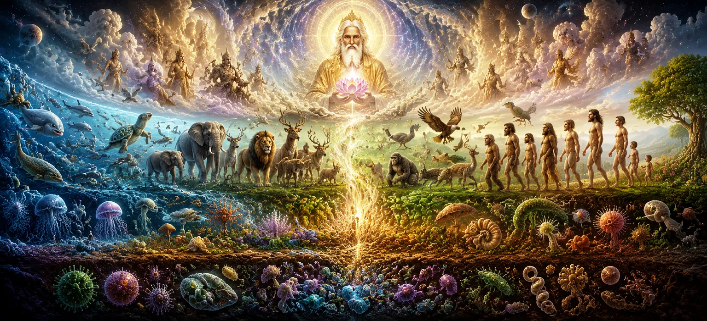

After hearing about the higher worlds and the lower worlds that form the structure of the universe, the sages desired to understand another profound mystery. They wished to know how life itself first appeared within creation. How did the countless creatures that populate the worlds come into existence? What divine process transformed the lifeless universe into a vibrant realm filled with living beings? In response, the sacred narration explains that the emergence of life was not accidental but part of the divine plan established by Lord Shiva. Through His supreme will, the various forms of existence gradually manifested, bringing movement, consciousness, diversity, and purpose into the cosmic order.
The Shiva Purana teaches that all living beings originate from the same divine source. Though creatures differ in form, ability, nature, and destiny, the sacred essence within them remains one. Every life form, from the smallest insect to the most exalted sage, carries a spark of the universal consciousness that flows from the Supreme Lord. This chapter reveals how different categories of living beings emerged and how each was given a unique role within creation. Through this teaching, devotees learn to respect all forms of life and recognize the presence of the divine in every creature that inhabits the universe.
When the structure of the universe had been established and the worlds were prepared, the next stage of creation began. By the divine will of Lord Shiva, life emerged throughout the cosmos. The previously silent realms became filled with movement, sound, growth, and awareness. Creation was no longer merely a collection of worlds; it became a living universe. The Shiva Purana explains that every form of life appeared according to a divine purpose. No creature was created without meaning. Each living being became part of the great cosmic harmony through which the universe continues to function.
Among the earliest living forms to appear were plants, trees, herbs, and sacred vegetation. These life forms provided nourishment, shelter, medicine, and balance to the world. Though they appear silent and motionless, they possess life and participate in the divine order of creation. The sages were taught that plants serve as a reminder of selfless giving. They provide benefits to countless beings without expecting anything in return. In this way, even the simplest forms of life reflect divine qualities established by Lord Shiva.
Following the emergence of plant life, various animals and birds came into existence. Some were created to inhabit forests, some the mountains, some the skies, and others the waters. Each species received characteristics suited to its environment and purpose within creation. The Shiva Purana teaches that every creature contributes to the balance of nature. Even beings that appear small or insignificant play important roles within the cosmic design. Through this understanding, devotees learn to respect all forms of life as manifestations of divine intelligence.
Providers of nourishment, medicine, and balance.
Created to inhabit land, sky, mountains, and waters.
Every living form serves a role within creation.
The astonishing diversity of life demonstrates the limitless creativity of the Supreme Lord. From the smallest organisms to the most majestic creatures, every form reflects a unique aspect of the divine order. Together, they create a living world filled with beauty, balance, and purpose.
Among all living creatures, human beings were granted a unique position within creation. Unlike other forms of life that primarily follow instinct, humans were blessed with the ability to reason, discriminate between right and wrong, pursue knowledge, and consciously seek the Divine. The Shiva Purana teaches that human birth is extremely rare and precious. It provides the opportunity to perform righteous actions, cultivate devotion, acquire wisdom, and ultimately attain liberation. For this reason, sages regard human life as one of the greatest gifts within creation.
The sages learned that living beings were created in many different forms according to their nature, Karma, and purpose. Some move upon the earth, some fly through the skies, some dwell in water, while others remain rooted in the soil. Together they form an interconnected web of life sustaining the balance of the universe. This diversity reflects the limitless wisdom of Lord Shiva. Each form of existence possesses qualities suited to its role, demonstrating that creation is neither random nor chaotic but carefully ordered according to divine intelligence.
Although living beings differ greatly in appearance and ability, they are all connected through the same divine source. The life force flowing through every creature ultimately originates from the Supreme Lord. Because of this shared origin, all forms of life deserve respect and compassion. The Shiva Purana encourages devotees to see beyond external differences and recognize the divine presence within every being. Such understanding cultivates humility, kindness, and reverence toward all creation.
Life provides opportunities for learning and evolution.
Every being experiences the results of its actions.
The ultimate purpose of life is union with the Supreme.
The Shiva Purana explains that life was created not merely for survival or enjoyment but for spiritual growth. Through experience, Karma, knowledge, devotion, and self-realization, every soul gradually advances toward its ultimate destination—the realization of Lord Shiva, the eternal source of all existence.
As living beings entered creation, they also became part of the great cycle of birth, death, and rebirth. According to the Shiva Purana, the soul itself is eternal and never perishes. What changes is only the body through which the soul experiences the world. Driven by Karma, souls move through different forms of existence across many lifetimes. Through these experiences they learn, grow, and gradually progress toward spiritual awakening. The cycle continues until true knowledge and liberation are attained.
Lord Shiva is described as the compassionate protector of all living beings. His grace extends equally to humans, animals, birds, sages, gods, and even those who have strayed from the path of righteousness. No creature is outside the reach of His divine mercy. The sages understood that the Creator does not abandon His creation. Instead, He continually guides souls through life's experiences, offering opportunities for learning, purification, and eventual liberation.
Because human beings possess intelligence and self-awareness, they also carry a greater responsibility than other creatures. The ability to distinguish between righteousness and wrongdoing places humanity in a unique position within creation. The Shiva Purana teaches that human life should be used wisely. Instead of becoming lost in temporary pleasures, people should cultivate Dharma, devotion, compassion, and self-discipline. By doing so, they honor the purpose for which human birth was granted.
Having heard how countless forms of life emerged from the divine will of Lord Shiva, the sages were filled with admiration and devotion. They marveled at the wisdom through which every creature was given its place, purpose, and means of survival within the universe. With folded hands, they praised Mahadeva as the source of all life and consciousness. They recognized that every living being is connected through Him and that the entire world thrives through His sustaining power. Their hearts overflowed with gratitude as they prepared to hear the next sacred teaching concerning the establishment of Dharma within creation.
"All living beings arise from the same divine source. Though their forms may differ, the sacred spark within them is one. He who sees the presence of Lord Shiva in every creature truly understands the purpose of creation."
The mystery of how living beings emerged within creation has now been revealed. Continue to the next chapter to discover how Dharma was established in the universe and how divine principles began guiding all forms of life.